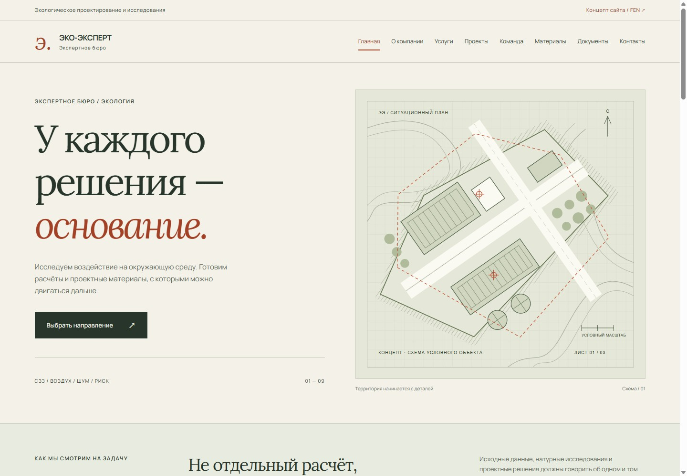

ЭКО-ЭКСПЕРТ — демо, новая вкладка
Сайт экспертного бюро: авторский чертёж, каталог из девяти направлений и спокойная инженерная подача.
Что внутри
Главная и внутренние страницы в единой системе: услуги, проектные сценарии, команда и материалы. Фильтры работают, форма собирает бриф локально. Объекты условные; отправка заявок не подключена.